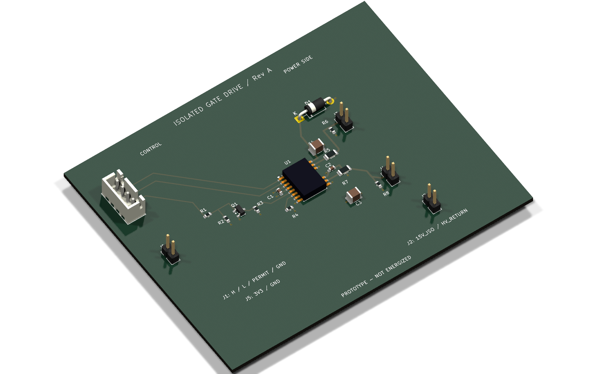
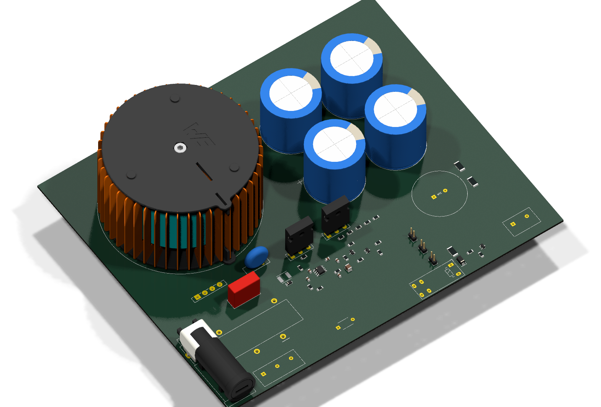

ZAPOTE / STANDALONE UNITS / CONSTRUCTION CHECKPOINT
Keep the 1,800 W target.
Make every board verdict inspectable.
Two Atopile circuits, native KiCad artifacts, and Rust engineering checks. These are actual saved-board renders. The gate-drive layout passes construction checks. The PFC power-entry candidate is placed and explicitly rejected as unrouted.
CONSTRUCTION CHECKS PASSIsolated gate drive
100 × 80 mm · 20 components · 17 nets

Turns complementary logic PWM into floating high-side and low-side gate drive. An external isolated 15 V supply feeds the low side; the high side uses a bootstrap.
U1 has a low-fidelity 14-lead visualization. Bootstrap startup, loaded switching, timing and insulation qualification are NOT RUN.
Rust report · Native DRC
UNROUTED — CONSTRUCTION FAILActive PFC power entry
230 × 190 mm · 53 components · 33 nets

Proposed 120 VAC boost PFC with a 389.6 V bus. Keeps the 1,800 W nominal AC-input class; 120 V × 15 A × PF 0.99 gives 1,782 W before conversion losses.
Several bodies lack 3D models. Heatsinks, service space and final enclosure fit are unverified. All control headers are HOT referenced. External isolated bias, precharge supervision and RMS foldback remain integration obligations.
Rust rejection · Native DRC
| Observed check | Gate drive | Power entry |
|---|
| Atopile compile / export | PASS | PASS |
| Native ERC findings | 0 | 0 |
| Native geometry / schematic parity findings | 0 / 0 | 0 / 0 |
| Native unconnected links | 0 | 94 — FAIL |
| Rust exact source / native pad graph | PASS | PASS |
| Full qualification verdict | INDETERMINATE | FAIL construction; qualification unrun |
| Powered measurements | NOT RUN | NOT RUN |
The wiring distinction the harness now demonstrates
The PFC candidate has the correct component pins assigned to the correct nets. That alone says nothing about whether copper joins them. Rust compares actual native copper clusters against every expected source net and rejects this board for fragmented connectivity. The regression uses the exact saved candidate and asserts that source binding passes while copper connectivity fails.
Counterexamples and lessons retained
- Bulk return moved to the bridge return bypasses the shunt: the independent PFC topology contract rejects it.
- Bridge positive tied directly to bulk positive bypasses the boost stage: rejected.
- The initial doubler model concealed RMS/energy problems: complete-cycle integration and energy balance expose the input-current failure.
- KiCad DRC accepted a gate-drive plane arrangement that failed the separate Rust all-layer domain-spacing check. The plane was corrected.
- Relay contacts have multiple physical pads per logical pin. Native pad census and UUID checks now preserve that distinction, including mechanical holes.
- A 45° native KiCad oracle catches pad-body rotation errors during construction.
221 Rust workspace tests passed at this checkpoint; two initializer oracle tests and the native multi-pad refresh test also passed. These tests do not establish hardware performance or a measured agent-memory improvement.
What remains for power entry
Review switching-loop placement and thermal/mechanical envelopes, author explicit current-sized copper with the voltage/domain clearance profile, close all 94 native links, and rerun the Rust and native gates. Then qualify precharge, current limiting, loop stability, thermal behavior, EMC and discharge. This candidate is not a fabrication release.